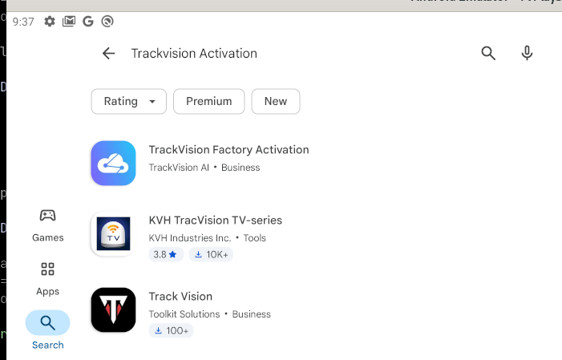
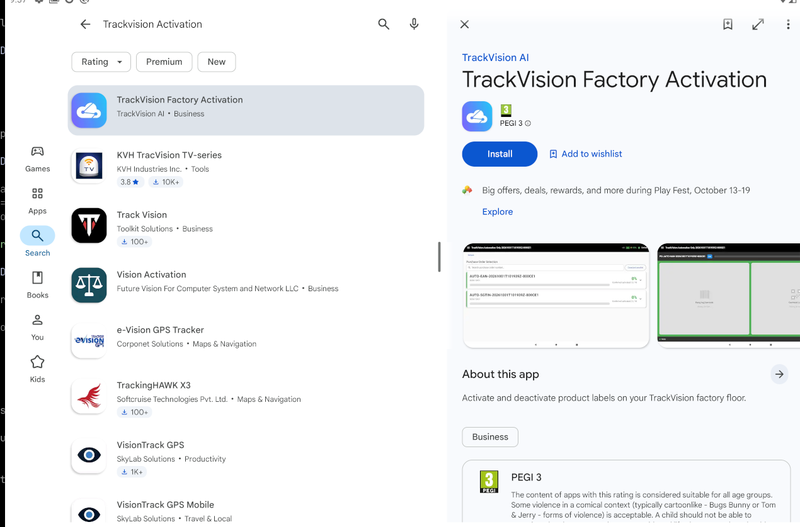
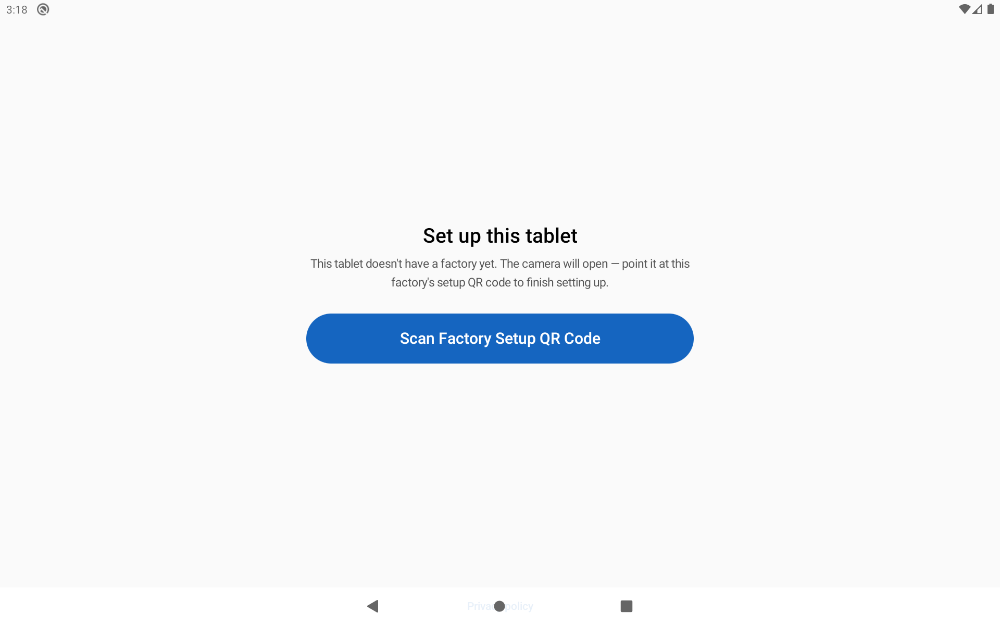
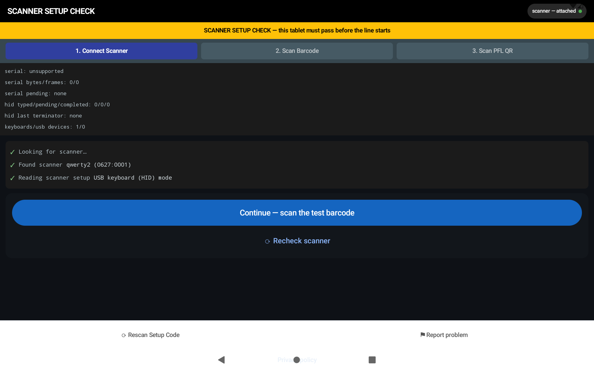
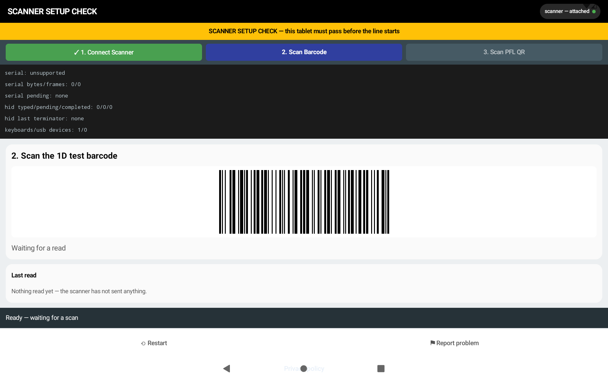
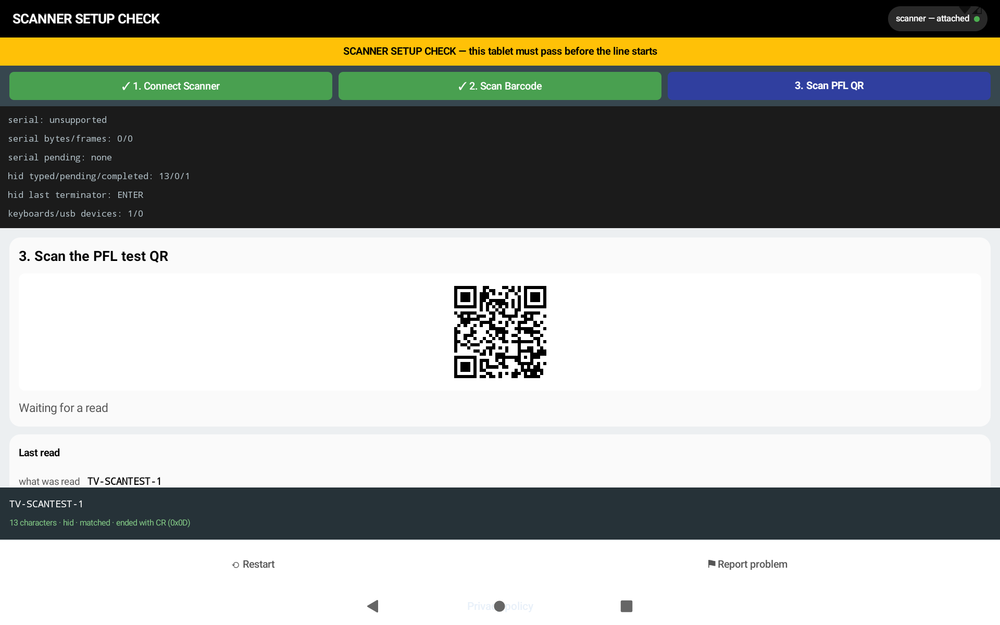
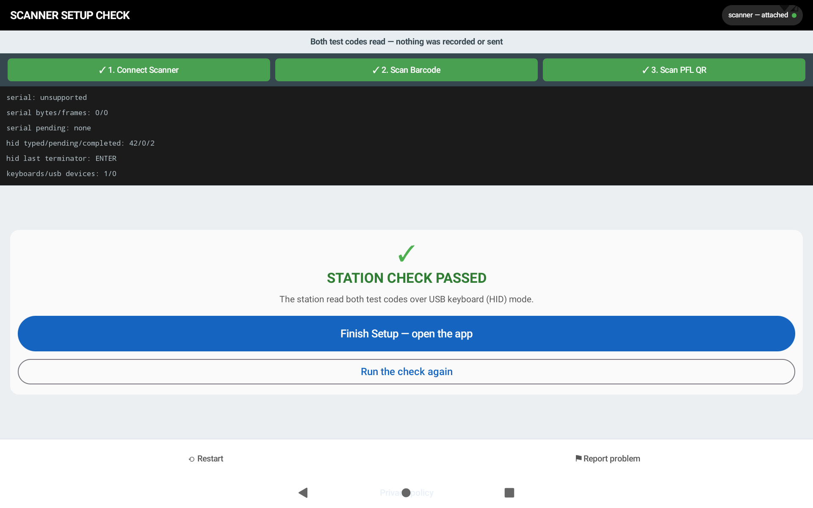

FACTORY SETUP
Install and check the tablet
Five setup steps. Use the help tips at the end if something fails.
1
Install the app
Open Play Store. Search for TrackVision Factory Activation. Tap Install.


2
Open the app
Tap Scan Factory Setup QR Code.

3
Scan this code
Point the scanner at the MAS setup code. After the scan, check the tablet details and tap Continue.

✓ Factory name is correct
✓ Site ID is correct
✓ Time zone looks right
4
Scanner setup check
The tablet must pass this check. Follow the three screens.



5
Finish setup
Wait for the green pass message. Then open the app.

Green check = good. Red warning = check the scanner.
6
Help & tips
1 Sometimes you may have to unplug and plug in the scanner again.
2 Make sure the scanner has power. Some tablets cannot power the scanner.
Any issues? Tap Report Problem.